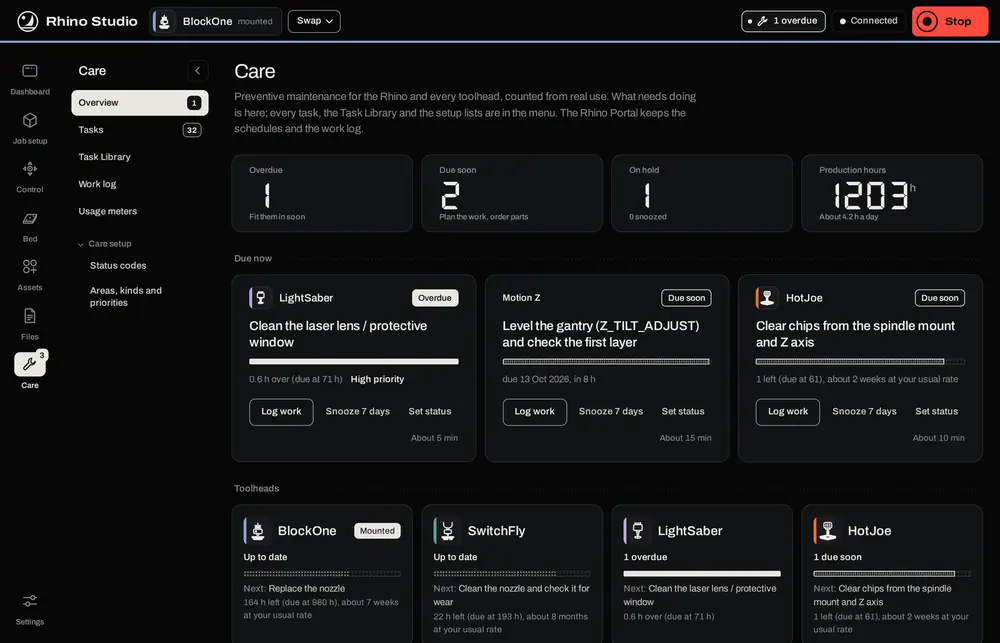
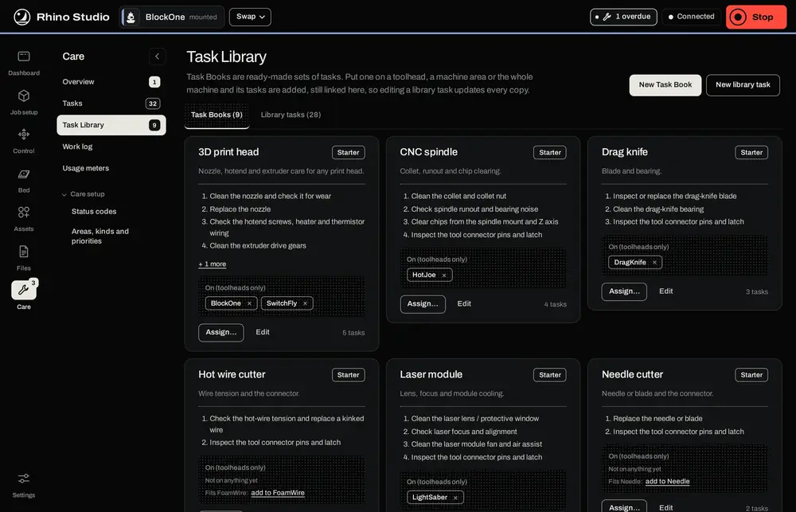
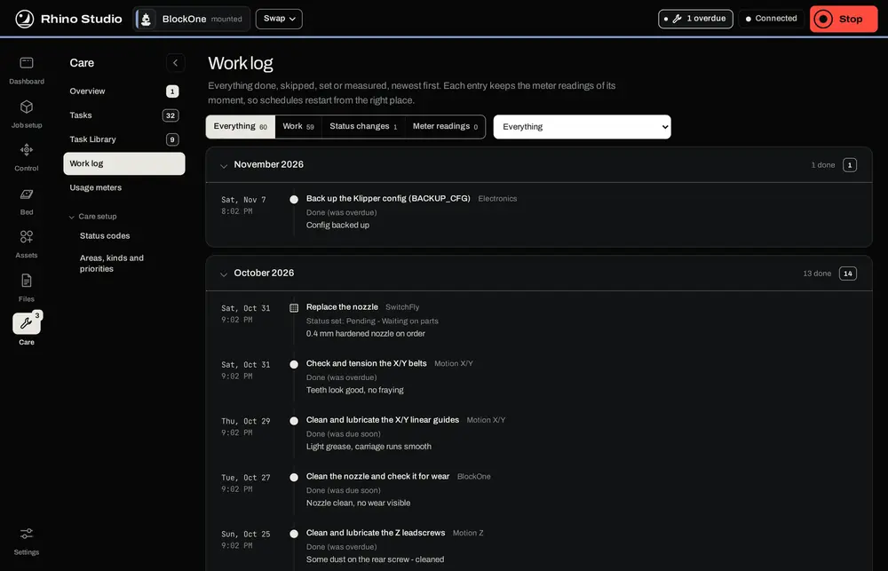

Care is Rhino Studio's view of the maintenance the Portal tracks: what is due, the tasks, the Task Library, the work log and the usage meters. The ideas behind it, such as Task Books, schedules by time or by use, and status codes, are explained in Part 5, Maintenance tracking. Care informs; it never stops a job.
The counts across the top: overdue, due soon, on hold, and the production hours the Portal has counted from Klipper and Moonraker. Below are the tasks that need doing, most urgent first, and a card for each toolhead with its next task. On a task, Log work records it done, with notes; Snooze 7 days puts it off; Set status gives it a status code such as Waiting on parts.

Tasks lists every task, grouped by what it's for, with filters for status and tool. Select a task to change its schedule, steps or parts; New task adds one of your own. The Task Library holds ready-made Task Books: put one on a toolhead, a machine area or the whole machine with Assign, and its tasks are added, still linked, so editing a library task updates every copy.

The Work log lists everything done, skipped, set or measured, newest first; each entry keeps the meter readings of its moment, so schedules restart from the right place. Usage meters shows the machine's and each tool's hours, jobs, filament and swaps; a meter can be set by hand, for a part changed outside the log. The switch at the bottom shows overdue and due-soon tasks after Klipper starts, once, after the which-tool question. PM_STATUS in the console lists them any time.

Care setup holds the lists tasks choose from: Status codes, and Areas, kinds and priorities.